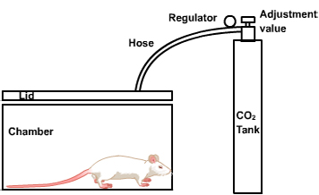
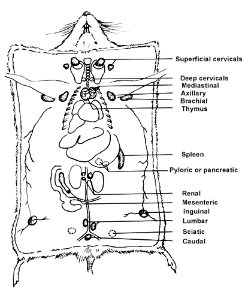
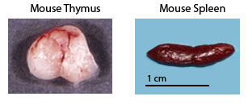

Removal of Thymus and Spleen from Mice
Principle
Lymphocytes are small white blood cells that are mainly responsible for carrying out the activities of immune system. They are about a trillion in number. The two major classes of lymphocytes are: B cells and T cells. Maturation of B cells is independent of thymus whereas T cell processing and maturation takes place in thymus. Both B cells and T cells recognize specific antigen targets.
B cells work chiefly by secreting soluble substances called antibodies into the body's fluids, or humors. This is known as Humoral immunity. Antibodies generally interact with circulating antigens such as bacteria and toxic molecules, but are unable to penetrate living cells. T cells, in contrast, interact directly with their targets, attacking body cells that have been infected by viruses or warped malignancy. This is known as Cellular immunity.

Although small lymphocytes look identical, even under the microscope, they can be distinguished by means of distinctive molecules they carry on their cell surface. These markers not only help to distinguish between B cells and T cells, but also among various subsets of cells that behave differently. Every mature T cell carries a marker known as T3 (CD3), in addition, most helper T cells carry a T4 (CD4) marker, a molecule that recognizes class II MHC antigens. Another molecule known as CD8 recognizes Class I MHC antigens which are found on many suppressor/cytotoxic T cells. In addition, different T cells have different kinds of antigen receptors-either alpha/beta or gamma/delta.
The term Euthanasia derived from a Greek word meaning "good death". Euthanasia of laboratory animals must be performed by trained personnel using appropriate techniques, equipment, and reagents in order to effect a death that is humane and satisfies research requirements.
Acceptable methods of euthanasia are painless or minimize distress, and are quick and easy to perform, safe for those performing the procedure, and efficient and economic. They are aesthetically acceptable and are done in the absence of other animals. In addition, these methods do not result in gross histological or histochemical changes that would adversely affect research results. Various techniques are employed for this purpose. Eg: carbon dioxide asphyxiation, pentobarbital overdose, exsanguinations (to drain of blood), and cervical dislocation. Each technique has its own advantages and disadvantages. Remember to wear disposable gloves when handling animals in the lab.
Selection of the method of euthanasia must be made during development of the experimental design. When no further data is to be derived from the animal, a euthanasia method that is painless, quick, and safe to administer should be chosen. When further use of tissue or body fluid is planned, a technique or agent that has little or no effect on the target tissue or fluid should be selected.
The removal of lymphoid organs for further culture, isolation of cell populations, or direct testing is one of the simplest and most frequently used procedures in immunology. Typical uses include providing cells for cytotoxicity or proliferation assays, for analysis of cytokine production or response, and for the isolation of B, T and adherent cell subpopulations for culture or reconstitution of other animals. Here, we cover the identification and removal of mouse thymus and spleen. Other lymphoid organs like the lymphnodes can also be collected from axillary, cervical, inguinal, and mesenteric regions. The same protocols are applicable to other lab animals (rodents, rabbits) with minor modifications. The thymus in the mouse consists of two lobes, and lies on the median line of the vertebral column, close to the base of the heart. In normal conditions, the organ shows variations of dimensions in relation to the age of the animal. In fact, in the young mouse, the thymus is well developed, while in the adult or in the old age is atrophic and difficult to detect macroscopically.

The spleen is an organ of predominantly lympho-erythropoietic function. The parenchyma of this organ contains: a) a tissue with erythropoietic function called red pulp, constituted by vessels and cords of various types of red cells (haemocytoblasts, erythrocytes, leukocytes, megakaryocytes); b) a lymphoid tissue called white pulp. The spleen is situated in the left superior abdominal quadrant; it has a lengthened, oval, slightly curved shape. The ventral face is smooth and convex; the dorsal one is slightly concave, oriented towards the stomach, to which it is connected by means of the gastrosplenic ligament. Moreover, the hilum, through which the splenic vessels enter the organ, lies on the dorsal face of the spleen. In a young-adult mouse the spleen measures approximately 15 millimetres in length, 3 millimetres in width and 2 millimetres in thickness. Its average weight is approximately of 100 mg. Under normal conditions, the spleen has a friable and soft consistency, a smooth surface covered by a thin and transparent capsule, and a dark-red colour.

Recoveries of live lymphocytes from a 6week-old mouse are generally 5-15x107 from the spleen, 5-10x107 from collected lymph nodes (without mesenteric) and 10-30x107 from the thymus. Recoveries vary significantly with age (peak for thymus is 4-6 weeks; for spleen slightly later, i.e., 8-10 weeks), gender (female mice tend to have larger thymuses), and strain (as it is impossible to mention all strains, it is recommended that baseline data be collected). In addition, stress results in low recoveries of thymocytes-e.g., mice that have been shipped over long distances will have 5-fold smaller thymuses, and fighting among mice kept under crowded conditions will have a similar effect. Mice subjected to these conditions should recover in a week.
The organ cell suspension is dispersed in cell culture media. The media can be either RPMI1640 (developed by Moore et.al, at Roswell Park Memorial Institute) or DMEM (Dulbecco's Modified Eagle's Medium) media (these are the most widely used). High-glucose formulations of these media are supplemented shortly before use with fetal bovine serum (FBS; also known as fetal calf serum) as well as glutamine, 2-mercaptoethanol (2-ME), penicillin, and streptomycin sulfate to formulate "Complete" media. "Complete RPMI-5 medium" means that RPMI 1640 is supplemented with 5% FBS plus the other ingredients noted above. DMEM media have an osmolarity that is more compatible with mouse serum than RPMI; in fact, RPMI was specifically designed for the culture of human cells. Nevertheless, satisfactory results with growth and processing of many mouse cell types can be obtained with RPMI. The FBS used is heat inactivated (1hr at 56oC). The heat treatment is thought by some labs to reduce the number of viral and other adventitious contaminants and by others to be required to inactivate complement. It therefore has developed into a standard procedure before the use of a certain batch of FBS, despite alleged disadvantages (i.e., inactivation of certain growth factors and production of heat-labile serum components that are toxic to cells). 2-Mercaptoethanol must be included in media used for procedures involving primary immunization of T and B cells in suspension cultures. The precise mode of action of 2-ME has not been defined; its presence during growth of established cell lines appears not to be required, but it has proven to be a critical ingredient in primary cultures. It is convenient to always use 2-ME as a supplement in media since it has no adverse effects on the culture of cell lines. 2-Mercaptoethanol must be added to media immediately before use because its activity rapidly declines in diluted form. Thus, concentrated 2-ME (14.3 M) is diluted to 50 mM in HBSS or PBS and this solution is added to media at a final concentration of 50μM. The 50 mM stock solution is stored at 4oC and should be replaced after ~4 months.
In order to remove RBCs from spleen cell suspension, we use ACK lysis buffer. It was designed for the lysing of RBCs from mouse lymphocyte preparations. The buffer also works for human red blood cells. This product is not to be used for lysing whole blood.
Many procedures aimed at removing certain subpopulations of cells through cytotoxic elimination will require the subsequent removal of dead cells. Cell lines that have been overgrown also may benefit from removal of dead cells (see commentary). The procedure using Ficoll-Paque, is based on density differences between live cells (lower density) and dead cells (higher density) and has the added advantage of separating RBC from live lymphocytes. Dead cells and RBC pass through a high-density solution of Ficoll and sodium diatrizoate (bringing the solution to the appropriate density and osmotic strength) during centrifugation, while live cells remain floating on top of the high-density material. The densities of Ficoll-Paque are temperature dependent; the procedures are usually carried out at room temperature. Care should therefore be taken to bring cell suspensions, centrifuge, and high-density solutions to room temperature. Failure to do so will result in loss of live cells from the interface-instead of floating to the top of the high-density layer; they will collect at the bottom of the tube.